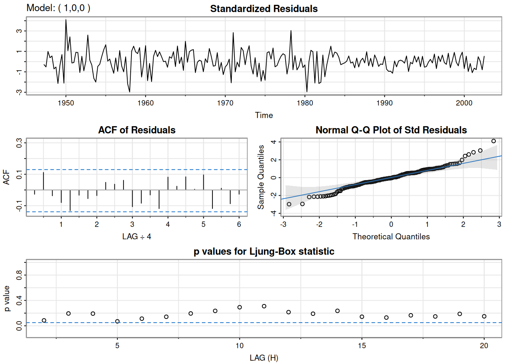
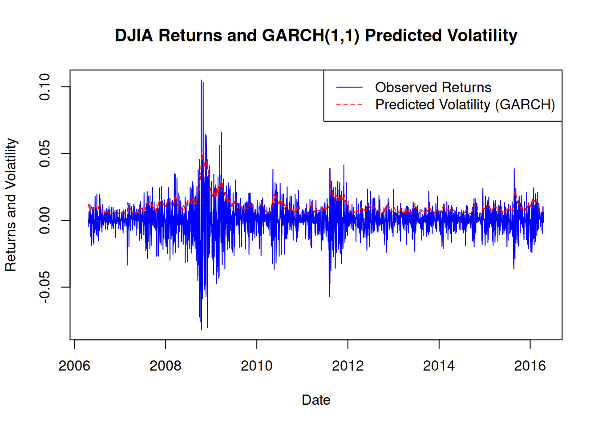
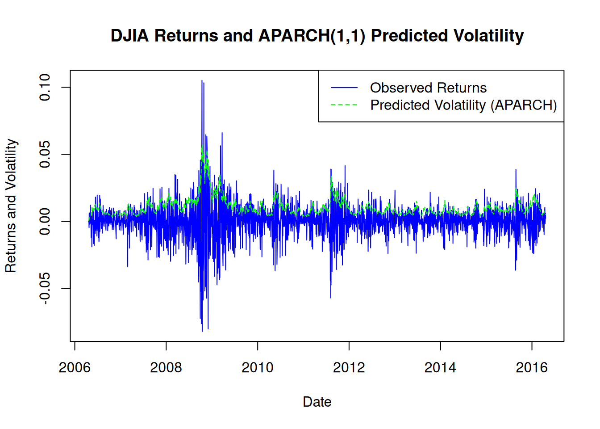

In Example 3.39, we fit an MA(2) model and an AR(1) model to the U.S. GNP series. The residuals from both models appeared to resemble a white noise process, but Example 3.43 suggested that the AR(1) model might be a better fit. It has been proposed that the U.S. GNP series may exhibit ARCH (Autoregressive Conditional Heteroskedasticity) errors, so we will investigate this possibility in this example.
If the GNP noise term follows an ARCH process, the squared residuals from the model should behave like a non-Gaussian AR(1) process, as noted in Equation 5.39.
3.1.1.1 Initial Analysis of Residuals
The following R code generates the ACF and PACF plots of the squared residuals to check for remaining dependence:
library(astsa)# Fit AR(1) model to differenced log-transformed GNPu <-sarima(diff(log(gnp)), 1, 0, 0)
initial value -4.589567
iter 2 value -4.654150
iter 3 value -4.654150
iter 4 value -4.654151
iter 4 value -4.654151
iter 4 value -4.654151
final value -4.654151
converged
initial value -4.655919
iter 2 value -4.655921
iter 3 value -4.655922
iter 4 value -4.655922
iter 5 value -4.655922
iter 5 value -4.655922
iter 5 value -4.655922
final value -4.655922
converged
<><><><><><><><><><><><><><>
Coefficients:
Estimate SE t.value p.value
ar1 0.3467 0.0627 5.5255 0
xmean 0.0083 0.0010 8.5398 0
sigma^2 estimated as 9.029569e-05 on 220 degrees of freedom
AIC = -6.44694 AICc = -6.446693 BIC = -6.400958

acf2(resid(u$fit)^2, 20) # ACF and PACF of squared residuals
The plots reveal that there may be some small remaining dependence in the squared residuals.
3.1.1.2 Fitting an AR(1)-ARCH(1) Model
To examine the ARCH nature of the residuals, we fit an AR(1)-ARCH(1) model to the GNP returns using the fGarch package. The garchFit function models the AR(1) and ARCH(1) components. The code and a summary of the results are shown below:
library(fGarch)
NOTE: Packages 'fBasics', 'timeDate', and 'timeSeries' are no longer
attached to the search() path when 'fGarch' is attached.
If needed attach them yourself in your R script by e.g.,
require("timeSeries")
# Fit AR(1)-ARCH(1) modelfit <-garchFit(~arma(1, 0) +garch(1, 0), data =diff(log(gnp)))
Series Initialization:
ARMA Model: arma
Formula Mean: ~ arma(1, 0)
GARCH Model: garch
Formula Variance: ~ garch(1, 0)
ARMA Order: 1 0
Max ARMA Order: 1
GARCH Order: 1 0
Max GARCH Order: 1
Maximum Order: 1
Conditional Dist: norm
h.start: 2
llh.start: 1
Length of Series: 222
Recursion Init: mci
Series Scale: 0.01015924
Parameter Initialization:
Initial Parameters: $params
Limits of Transformations: $U, $V
Which Parameters are Fixed? $includes
Parameter Matrix:
U V params includes
mu -8.20681904 8.206819 0.8205354 TRUE
ar1 -0.99999999 1.000000 0.3466459 TRUE
omega 0.00000100 100.000000 0.1000000 TRUE
alpha1 0.00000001 1.000000 0.1000000 TRUE
gamma1 -0.99999999 1.000000 0.1000000 FALSE
delta 0.00000000 2.000000 2.0000000 FALSE
skew 0.10000000 10.000000 1.0000000 FALSE
shape 1.00000000 10.000000 4.0000000 FALSE
Index List of Parameters to be Optimized:
mu ar1 omega alpha1
1 2 3 4
Persistence: 0.1
--- START OF TRACE ---
Selected Algorithm: nlminb
R coded nlminb Solver:
0: 682.89527: 0.820535 0.346646 0.100000 0.100000
1: 308.43148: 0.763492 0.258112 1.06104 0.352453
2: 306.07332: 0.681276 0.195897 1.04763 0.304072
3: 301.00807: 0.561958 0.448458 0.825277 0.0402737
4: 298.88361: 0.383716 0.465477 0.632947 0.385969
5: 296.74288: 0.504144 0.389445 0.683635 0.247795
6: 296.67703: 0.497724 0.366843 0.688130 0.229496
7: 296.60039: 0.500011 0.385702 0.703145 0.211105
8: 296.59692: 0.515646 0.374174 0.690079 0.194961
9: 296.56381: 0.513570 0.367018 0.702272 0.200013
10: 296.55723: 0.523440 0.363126 0.708406 0.194151
11: 296.55632: 0.522578 0.364913 0.710104 0.194839
12: 296.55598: 0.520871 0.364956 0.710924 0.193212
13: 296.55568: 0.519486 0.366571 0.710212 0.194511
14: 296.55568: 0.519509 0.366597 0.710266 0.194512
15: 296.55568: 0.519511 0.366585 0.710290 0.194451
16: 296.55568: 0.519505 0.366562 0.710299 0.194464
17: 296.55568: 0.519526 0.366560 0.710295 0.194472
18: 296.55568: 0.519522 0.366563 0.710295 0.194471
Final Estimate of the Negative LLH:
LLH: -722.2849 norm LLH: -3.253536
mu ar1 omega alpha1
0.0052779470 0.3665625656 0.0000733096 0.1944713341
R-optimhess Difference Approximated Hessian Matrix:
mu ar1 omega alpha1
mu -2749495.418 -24170.124984 4.546826e+06 -1.586692e+03
ar1 -24170.125 -390.266822 1.253879e+04 -6.733789e+00
omega 4546825.784 12538.791045 -1.590043e+10 -7.069342e+05
alpha1 -1586.692 -6.733789 -7.069342e+05 -1.425395e+02
attr(,"time")
Time difference of 0.004781961 secs
--- END OF TRACE ---
Time to Estimate Parameters:
Time difference of 0.03493953 secs
summary(fit)
Title:
GARCH Modelling
Call:
garchFit(formula = ~arma(1, 0) + garch(1, 0), data = diff(log(gnp)))
Mean and Variance Equation:
data ~ arma(1, 0) + garch(1, 0)
<environment: 0x55e07c189ca8>
[data = diff(log(gnp))]
Conditional Distribution:
norm
Coefficient(s):
mu ar1 omega alpha1
0.00527795 0.36656257 0.00007331 0.19447133
Std. Errors:
based on Hessian
Error Analysis:
Estimate Std. Error t value Pr(>|t|)
mu 5.278e-03 8.996e-04 5.867 4.44e-09 ***
ar1 3.666e-01 7.514e-02 4.878 1.07e-06 ***
omega 7.331e-05 9.011e-06 8.135 4.44e-16 ***
alpha1 1.945e-01 9.554e-02 2.035 0.0418 *
---
Signif. codes: 0 '***' 0.001 '**' 0.01 '*' 0.05 '.' 0.1 ' ' 1
Log Likelihood:
722.2849 normalized: 3.253536
Description:
Mon Nov 18 14:09:35 2024 by user:
Standardised Residuals Tests:
Statistic p-Value
Jarque-Bera Test R Chi^2 9.1180362 0.010472337
Shapiro-Wilk Test R W 0.9842406 0.014336495
Ljung-Box Test R Q(10) 9.8743260 0.451587525
Ljung-Box Test R Q(15) 17.5585456 0.286584404
Ljung-Box Test R Q(20) 23.4136291 0.268943681
Ljung-Box Test R^2 Q(10) 19.2821015 0.036822455
Ljung-Box Test R^2 Q(15) 33.2364834 0.004352735
Ljung-Box Test R^2 Q(20) 37.7425917 0.009518989
LM Arch Test R TR^2 25.4162474 0.012969006
Information Criterion Statistics:
AIC BIC SIC HQIC
-6.471035 -6.409726 -6.471669 -6.446282
The estimates for the AR(1) component are ( = 0.005 ) (mu) and ( = 0.367 ) (ar1). The ARCH(1) parameters are ( _0 = 0 ) (omega) and ( _1 = 0.194 ), which is significant with a p-value around 0.02.
3.1.1.3 Residual Diagnostics
Various tests were performed on the residuals and squared residuals. Notable results include:
Jarque-Bera Test: Chi-squared statistic of 9.118 (p-value = 0.010), suggesting some non-normal skewness and kurtosis in the residuals.
Shapiro-Wilk Test: W statistic of 0.984 (p-value = 0.014), indicating deviation from normality based on empirical order statistics.
Ljung-Box Tests:
Residuals [R]: Q(20) statistic of 23.414 (p-value = 0.269), suggesting no significant autocorrelation in residuals.
Squared Residuals [R^2]: Q(20) statistic of 37.743 (p-value = 0.010), indicating some dependence in squared residuals.
The diagnostics imply that the ARCH(1) model captures the non-constant variance pattern, with significant ARCH effects in the U.S. GNP series.
3.2 ARCH Analysis of the DJIA Returns
3.2.1 Background
The daily returns of the Dow Jones Industrial Average (DJIA) exhibit classic GARCH characteristics, including volatility clustering. Additionally, there is a low level of autocorrelation in the series itself. To capture both of these features, we fit an AR(1)-GARCH(1, 1) model to the series, assuming t-distributed errors for robustness in handling heavy tails.
3.2.1.1 Data Preparation and Initial Analysis
The DJIA returns are computed as the daily log differences of closing prices. The ACF of the returns and squared returns reveal some autocorrelation in the returns and significant autocorrelation in the squared returns, suggesting the presence of GARCH effects. The initial analysis and autocorrelation functions can be plotted with:
library(xts)
Loading required package: zoo
Attaching package: 'zoo'
The following objects are masked from 'package:base':
as.Date, as.Date.numeric
The fGarch package in R allows for fitting an AR(1)-GARCH(1, 1) model with t-distributed errors to account for potential heavy tails in the DJIA returns. The following code fits the model and provides a summary of the estimates:
library(fGarch)# Fit AR(1)-GARCH(1,1) model with t-distributed errorsdjia.g <-garchFit(~arma(1, 0) +garch(1, 1), data = djiar, cond.dist ="std")
Title:
GARCH Modelling
Call:
garchFit(formula = ~arma(1, 0) + garch(1, 1), data = djiar, cond.dist = "std")
Mean and Variance Equation:
data ~ arma(1, 0) + garch(1, 1)
<environment: 0x55e07ac38830>
[data = djiar]
Conditional Distribution:
std
Coefficient(s):
mu ar1 omega alpha1 beta1 shape
8.5854e-04 -5.5315e-02 1.6101e-06 1.2444e-01 8.7001e-01 5.9788e+00
Std. Errors:
based on Hessian
Error Analysis:
Estimate Std. Error t value Pr(>|t|)
mu 8.585e-04 1.470e-04 5.842 5.16e-09 ***
ar1 -5.532e-02 2.023e-02 -2.735 0.006238 **
omega 1.610e-06 4.459e-07 3.611 0.000305 ***
alpha1 1.244e-01 1.660e-02 7.496 6.55e-14 ***
beta1 8.700e-01 1.526e-02 57.022 < 2e-16 ***
shape 5.979e+00 7.917e-01 7.552 4.31e-14 ***
---
Signif. codes: 0 '***' 0.001 '**' 0.01 '*' 0.05 '.' 0.1 ' ' 1
Log Likelihood:
8249.619 normalized: 3.27756
Description:
Mon Nov 18 14:09:36 2024 by user:
Standardised Residuals Tests:
Statistic p-Value
Jarque-Bera Test R Chi^2 310.0081692 0.00000000
Shapiro-Wilk Test R W 0.9820293 0.00000000
Ljung-Box Test R Q(10) 16.8224601 0.07838596
Ljung-Box Test R Q(15) 26.4481303 0.03356806
Ljung-Box Test R Q(20) 28.7109935 0.09360790
Ljung-Box Test R^2 Q(10) 15.3676143 0.11922299
Ljung-Box Test R^2 Q(15) 19.1365044 0.20761469
Ljung-Box Test R^2 Q(20) 22.9288237 0.29230296
LM Arch Test R TR^2 15.0397685 0.23926882
Information Criterion Statistics:
AIC BIC SIC HQIC
-6.550353 -6.536453 -6.550364 -6.545309
#plot(djia.g) # View model diagnostic plots
3.2.1.3 Summary of Results
The AR(1) coefficient ((_1)) is -0.05531, indicating a slight negative autocorrelation in returns. The GARCH parameters (_1 = 0.1244) and (_1 = 0.8700) are both significant, suggesting the model captures the observed volatility clustering in DJIA returns effectively.
3.2.1.4 Residual Diagnostics
Residual diagnostics are as follows:
Ljung-Box Test:
Residuals ([R]): (Q(10) = 16.82) (p-value = 0.0786), suggesting no significant autocorrelation in residuals.
These tests confirm that the AR(1)-GARCH(1, 1) model adequately captures the conditional heteroskedasticity in the DJIA returns.
3.2.1.5 GARCH Predictions of Volatility
We explored GARCH predictions of volatility, particularly around the financial crisis of 2008. One-step-ahead predictions of volatility ((^2)) were plotted along with the observed data, as shown in Figure 5.6. This provides insight into how volatility predictions varied during a period of high market uncertainty.
# Assuming `djia` is already loaded with a 'Close' column for DJIA closing prices# Calculate daily returns of DJIAdjiar <-diff(log(djia$Close))[-1]# Fit the AR(1)-GARCH(1,1) model with t-distributed errorsdjia.g <-garchFit(~arma(1, 0) +garch(1, 1), data = djiar, cond.dist ="std")
# Extract fitted volatility (sigma) from the GARCH modelpredicted_volatility <- djia.g@sigma.t# Set up a time series index (assuming `djiar` has time index matching `predicted_volatility`)dates <-index(djiar)# Plot the observed returns and predicted volatilityplot(dates, djiar, type ="l", col ="blue", ylab ="Returns and Volatility", xlab ="Date", main ="DJIA Returns and GARCH(1,1) Predicted Volatility")lines(dates, predicted_volatility, col ="red", lty =2)# Add a legendlegend("topright", legend =c("Observed Returns", "Predicted Volatility (GARCH)"), col =c("blue", "red"), lty =c(1, 2))

3.3 APARCH Analysis of the DJIA Returns
3.3.1 Background
In this example, we apply an AR-APARCH model to the DJIA returns, as discussed in Example 5.5. Similar to the previous example, an AR(1) term is included in the model to account for the conditional mean. We assume that the error process follows an APARCH(1,1) structure with t-distributed errors to capture asymmetry and heavy tails in the return series. The model equation is:
[ r_t = _t + y_t ]
where ( _t ) is an AR(1) component, and ( y_t ) follows an APARCH process with conditional variance modeled as specified in Equation (5.53).
3.3.1.1 Model Fitting and Summary
We use the fGarch package in R to fit the AR-APARCH(1,1) model to the DJIA returns. The following code performs the fitting and provides a summary of the estimated parameters:
library(xts)library(fGarch)# Calculate daily returns of DJIAdjiar <-diff(log(djia$Close))[-1]# Fit AR(1)-APARCH(1,1) model with t-distributed errorsdjia.ap <-garchFit(~arma(1, 0) +aparch(1, 1), data = djiar, cond.dist ="std")
Title:
GARCH Modelling
Call:
garchFit(formula = ~arma(1, 0) + aparch(1, 1), data = djiar,
cond.dist = "std")
Mean and Variance Equation:
data ~ arma(1, 0) + aparch(1, 1)
<environment: 0x55e079d0bff0>
[data = djiar]
Conditional Distribution:
std
Coefficient(s):
mu ar1 omega alpha1 gamma1 beta1
0.0005234 -0.0481833 0.0001798 0.0980894 1.0000000 0.8944564
delta shape
1.0702356 7.2857705
Std. Errors:
based on Hessian
Error Analysis:
Estimate Std. Error t value Pr(>|t|)
mu 5.234e-04 1.525e-04 3.433 0.000598 ***
ar1 -4.818e-02 1.934e-02 -2.491 0.012729 *
omega 1.798e-04 3.443e-05 5.222 1.77e-07 ***
alpha1 9.809e-02 1.030e-02 9.525 < 2e-16 ***
gamma1 1.000e+00 1.045e-02 95.728 < 2e-16 ***
beta1 8.945e-01 1.049e-02 85.279 < 2e-16 ***
delta 1.070e+00 1.350e-01 7.928 2.22e-15 ***
shape 7.286e+00 1.123e+00 6.490 8.61e-11 ***
---
Signif. codes: 0 '***' 0.001 '**' 0.01 '*' 0.05 '.' 0.1 ' ' 1
Log Likelihood:
8311.583 normalized: 3.302178
Description:
Mon Nov 18 14:09:37 2024 by user:
Standardised Residuals Tests:
Statistic p-Value
Jarque-Bera Test R Chi^2 245.156078 0.000000000
Shapiro-Wilk Test R W 0.983058 0.000000000
Ljung-Box Test R Q(10) 15.595870 0.111800290
Ljung-Box Test R Q(15) 26.450980 0.033541324
Ljung-Box Test R Q(20) 30.170758 0.067133620
Ljung-Box Test R^2 Q(10) 19.176843 0.038073151
Ljung-Box Test R^2 Q(15) 30.466591 0.010345882
Ljung-Box Test R^2 Q(20) 35.364460 0.018246902
LM Arch Test R TR^2 29.577276 0.003231735
Information Criterion Statistics:
AIC BIC SIC HQIC
-6.598000 -6.579468 -6.598020 -6.591274
3.3.1.2 Parameter Estimates
The AR(1) coefficient (_1) is -0.04818, while the APARCH parameters (_1), (_1), and () indicate the model captures asymmetry and persistence in volatility.
3.3.1.3 Residual Diagnostics
Several tests were performed to check the residuals for independence and normality:
Ljung-Box Test:
Residuals ([R]): (Q(10) = 15.71), with a p-value of 0.108, suggesting no significant autocorrelation in the residuals.
Squared Residuals ([R^2]): (Q(10) = 16.87), with a p-value of 0.077, indicating no remaining ARCH effects.
3.3.1.4 Predicted Volatility
The predicted volatility from the APARCH model differs from the GARCH model but displays similar volatility clustering patterns. To compare, we plot the observed returns and the one-step-ahead predicted volatility.
# Plot observed returns and APARCH predicted volatilitydates <-index(djiar)predicted_volatility_aparch <- djia.ap@sigma.tplot(dates, djiar, type ="l", col ="blue", ylab ="Returns and Volatility", xlab ="Date", main ="DJIA Returns and APARCH(1,1) Predicted Volatility")lines(dates, predicted_volatility_aparch, col ="green", lty =2)# Add a legendlegend("topright", legend =c("Observed Returns", "Predicted Volatility (APARCH)"), col =c("blue", "green"), lty =c(1, 2))

This plot compares the daily returns with the APARCH model’s predicted volatility, highlighting volatility clustering in the DJIA returns over time.